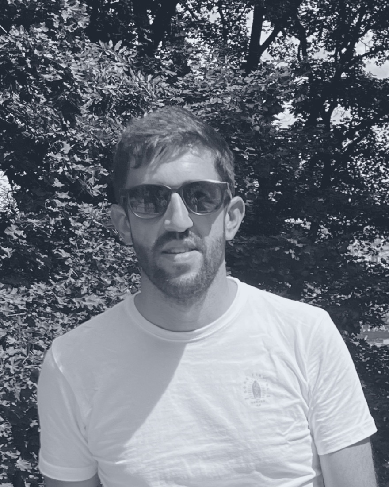

Diego Sánchez
Automatizo infraestructura, diseño pipelines CI/CD y opero plataformas cloud resilientes y escalables.

onlineSobre mí
Soy DevOps Engineer / SRE con más de 14 años de experiencia. He evolucionado desde el desarrollo web (Java, Spring) hasta especializarme en la automatización de infraestructura, integración y entrega continua (CI/CD) y operaciones de plataformas cloud.
Actualmente en Paradigma Digital, gestiono el ecosistema de Microsoft Azure DevOps para despliegues de plataformas de datos como Databricks y RStudio, colaborando con equipos multidisciplinares para garantizar entregas ágiles y fiables.
Me apasiona automatizar procesos, reducir la fricción entre desarrollo y operaciones, y construir infraestructuras resilientes y escalables.
- ▸ Infrastructure as Code
- ▸ Pipelines CI/CD
- ▸ Kubernetes & contenedores
- ▸ Observabilidad
- ▸ Cloud Azure
Stack técnico
Trayectoria
Responsable del ecosistema de Microsoft Azure DevOps para plataformas de datos del sector banca y seguros. Consultora B Corp de transformación digital.
- Pipelines CI/CD para despliegues en Databricks y RStudio.
- Infraestructura como código con Terraform.
- Gestión de repos, permisos y políticas de rama en Azure Repos.
Desarrollo e implementación de plataformas Smart Cities.
- Virtualización en VMware y OpenStack.
- Clústeres de Kubernetes e integración continua en Azure DevOps.
- Monitorización y servicio centralizado de logs.
Desarrollo y administración de sistemas en el entorno Smart Cities.
- APIs REST con Java / Spring Boot.
- Integración con dispositivos IoT y datos urbanos.
- Administración de servidores Linux y despliegue de apps.
Programador Java web en tramitación electrónica para la Consejería de Medio Ambiente.
Programador Java web en proyectos de tramitación electrónica.
Programador web de tramitación electrónica de la Junta de Andalucía.
Prácticas de Grado Superior como desarrollador Java web.
Venta y reparación de equipos. Servicios integrales a empresas.
Formación
Idiomas
¿Desplegamos algo juntos?
Hablemos sobre automatización, plataformas cloud y fiabilidad. Me encuentras aquí: